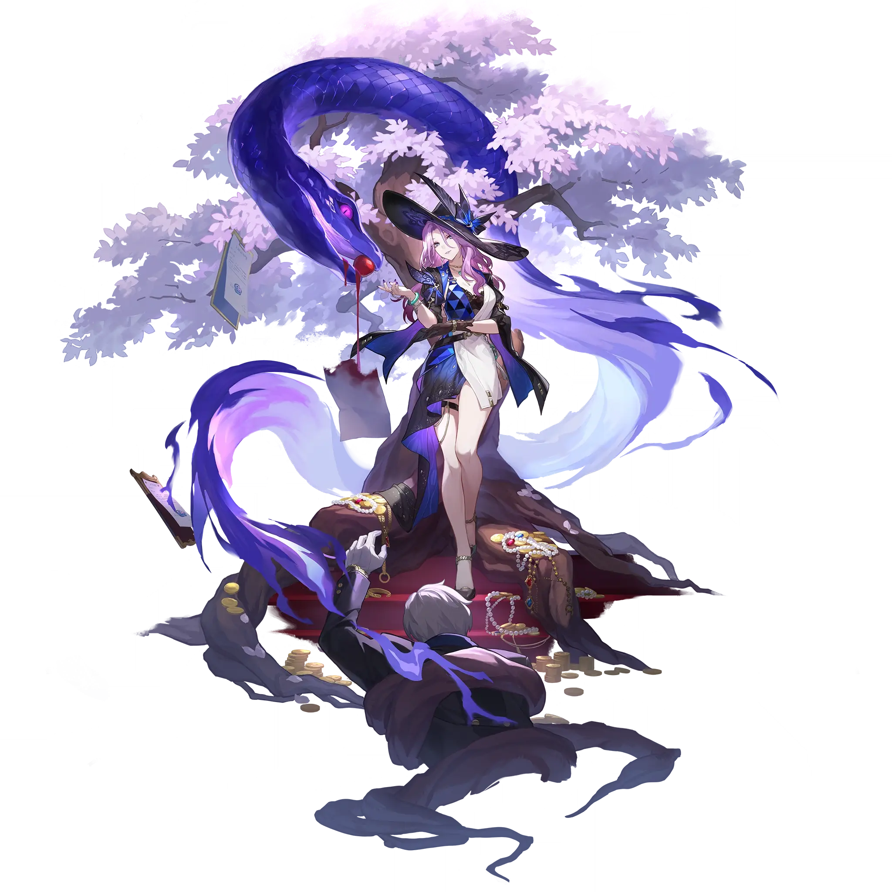

Jade
Best Jade build guide for Honkai Star Rail. See Jade's best Relics, Light Cones, teams, Eidolons, Trace priority, and how to play Jade.
🔍 Detail Skill
Semua skill aktif dan pasif beserta efeknya.
Deals Quantum DMG equal to #1[i]% of Jade's ATK to a single target enemy, and Quantum DMG equal to #2[i]% of Jade's ATK to adjacent enemies.
Makes a single target ally become the Debt Collector and increases their SPD by #1[i], lasting for #4[i] turn(s). After a Debt Collector attacks, deals 1 instance of Additional Quantum DMG equal to #3[i]% of Jade's ATK to each enemy target hit, and consumes the Debt Collector's HP by an amount equal to #2[i]% of their Max HP. If their current HP is insufficient, reduces their HP to 1. If Jade beco
After Jade or an ally that had become the Debt Collector attacks, Jade gains 1 Charge for each enemy target attacked. When the Charge reaches #3[i], consume #3[i] Charges to launch follow-up attack 1 time, dealing Quantum DMG equal to #5[i]% of Jade's ATK to all enemies. This follow-up attack does not generate Charge. When launching her Talent's follow-up attack, Jade immediately gains #4[i] stack
After using the Technique, inflicts enemies within a set area with Blind Fealty for #1[i] second(s). Enemies inflicted with Blind Fealty will not initiate attacks on allies. When entering battle via actively attacking enemies inflicted with Blind Fealty, all enemies with Blind Fealty will enter combat simultaneously. After entering battle, deals Quantum DMG equal to #2[i]% of Jade's ATK to all ene
⚔ Light Cone Terbaik
Diurutkan dari yang paling kuat. Persentase menunjukkan performa relatif terhadap pilihan terbaik.
💎 Relic Set Terbaik
Set terbaik untuk karakter ini, diurutkan berdasarkan prioritas.
📊 Stat Utama
Stat yang dicari pada tiap slot.
👥 Tim yang Direkomendasikan
Karakter yang sering dipasangkan bersama Jade.
 The Herta
The Herta
 Blade
Blade
 Herta
Herta
 Himeko
Himeko
 Ruan Mei
Ruan Mei
🔗 Lanjutkan
Build ini dirangkum dari Prydwen Institute. Starwise tidak menghitung sendiri. Angka bisa berubah setelah patch atau karakter baru rilis.